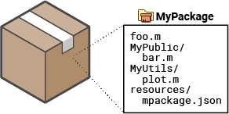
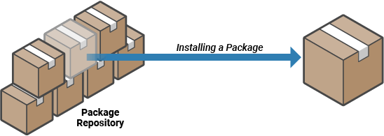

Organize and Distribute Code Using MATLAB Package Manager
The MATLAB® Package Manager is a set of objects and functions for creating, finding, installing, and managing MATLAB packages. After creating a package, you can distribute it to your end users by adding it to a package repository.
If you instead want to install MATLAB, Simulink®, and other MathWorks® products or support packages, see Install Support Packages Programmatically.
What Is a Package?
A package is a collection of MATLAB code, related files, and a package definition file that defines the package identity and dependencies. The purpose of a package is to compartmentalize code so that it can be shared while maintaining its intended functionality. When installing a package, the MATLAB Package Manager installs all of the code, supporting files, and any other packages that it depends on and adds them to the path. For information on finding and installing packages, see Find and Install Packages.

A package consists of a root folder, which contains the files and
member folders of the package. When installing a package, the
MATLAB Package Manager adds the root folder and all member folders to the path. The root
folder contains a resources folder, which contains the package definition
file named mpackage.json file.
The package definition file contains identifying information, descriptive information, and package properties. Identifying information can include the package name, version, and unique identifier. Descriptive information can include a summary of the package purpose, its provider, and the MATLAB release compatibility. The properties of a package can include its status, member folders, and any dependencies.
For more information on the package definition file and how to manage package properties, see Create and Manage Packages.
Package Dependencies
Some packages use code that is contained in a second package. These packages depend on the second package, and the second package is referred to as a dependency. When installing a package, the MATLAB Package Manager checks that all required dependencies are also installed. In this diagram, package A depends on package B and package B depends on packages C and D. When package A is installed, packages B, C, and D are installed as well.

When uninstalling a package, the MATLAB Package Manager checks each of the package dependencies and uninstalls them if they are unused. A dependency is considered unused if it was not installed directly and no installed packages depend on it.
Share Packages in Repositories
Authors can add packages that are ready for distribution to a repository, and end users
can install the packages from the repository. A package repository is a designated location
where packages are available for distribution. MATLAB keeps a list of known repositories. When you search for a package using
mpmsearch or
install a package using mpminstall, the
MATLAB Package Manager finds packages in known repositories.

View the current list of known repositories using mpmListRepositories. Add and remove repositories from the list of known
repositories using mpmAddRepository and mpmRemoveRepository. For more information, see Distribute Packages Using Folder-Based Repositories.
See Also
Objects
Functions
mpmcreate|mpminstall|mpmuninstall|mpmsearch|mpmlist|mpmAddRepository|mpmListRepositories|mpmRemoveRepository